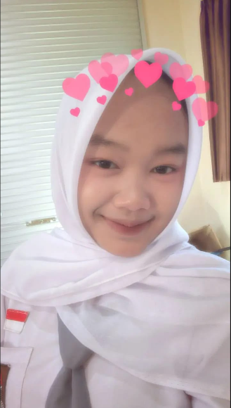
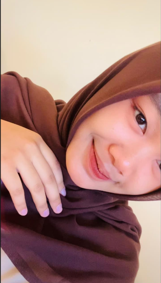
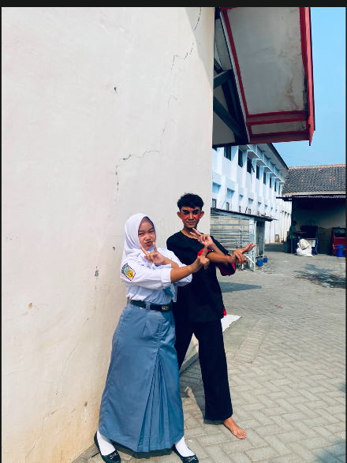
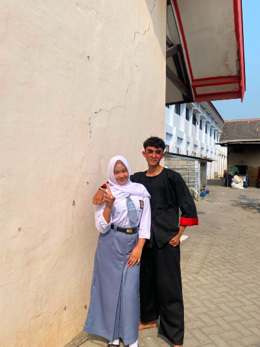
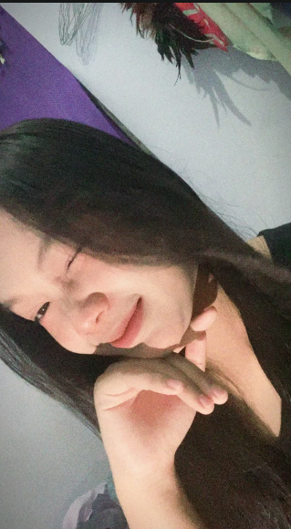
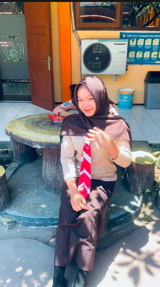
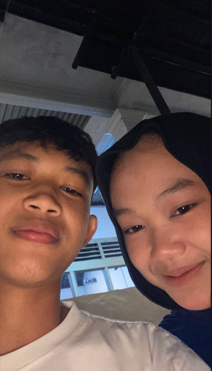
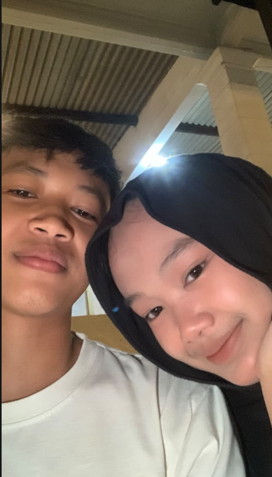

Awalnya biasa saja
Sampai akhirnya aku sadar, ada seseorang yang pelan-pelan menjadi bagian dari hari-hariku. Seseorang yang namanya selalu punya cara sendiri untuk membuatku tersenyum.
Untuk Niken — bukan tentang seberapa lama kita bersama, tapi tentang betapa banyak hal kecil yang akhirnya menjadi kenangan besar.
FOR YOU
Aku bikin halaman kecil ini bukan karena ceritanya sempurna, tapi karena setiap momen bersamamu terasa layak untuk diingat.
MEMORIES








A LETTER FOR YOU
ingat bahwa pernah ada seseorang yang diam-diam menyimpan banyak hal kecil tentangmu: caramu tersenyum, caramu bercerita, momen-momen receh yang bikin ketawa, dan rasa nyaman yang susah dijelaskan.
Aku nggak tahu sejauh apa perjalanan kita nanti. Tapi untuk sekarang, aku ingin menikmati setiap halaman yang sedang kita tulis bersama.
— dari seseorang yang sayang kamu ♡
Ada banyak hal dalam perjalanan kita yang mungkin terlihat sederhana. Obrolan random, ketawa karena hal yang nggak jelas, saling menunggu, jalan sebentar, atau sekadar berada di tempat yang sama. Tapi justru hal-hal seperti itulah yang membuat sebuah hubungan terasa punya cerita.
Sampai akhirnya aku sadar, ada seseorang yang pelan-pelan menjadi bagian dari hari-hariku. Seseorang yang namanya selalu punya cara sendiri untuk membuatku tersenyum.
Dari percakapan kecil sampai momen yang tidak direncanakan, semuanya tersimpan menjadi potongan-potongan cerita yang ingin aku simpan lebih lama.
Kalau suatu hari kita melihat kembali semua ini, semoga kita masih bisa tersenyum dan berkata, “ternyata kita pernah sebahagia itu.”
Aku mungkin nggak bisa mengulang setiap hari yang pernah kita lewati, tapi aku bisa menyimpan rasanya. Karena beberapa kenangan memang tidak dibuat untuk dilupakan—cukup dikenang, lalu disyukuri.
— untuk Niken, dari seseorang yang senang pernah berjalan bersamamu ♡